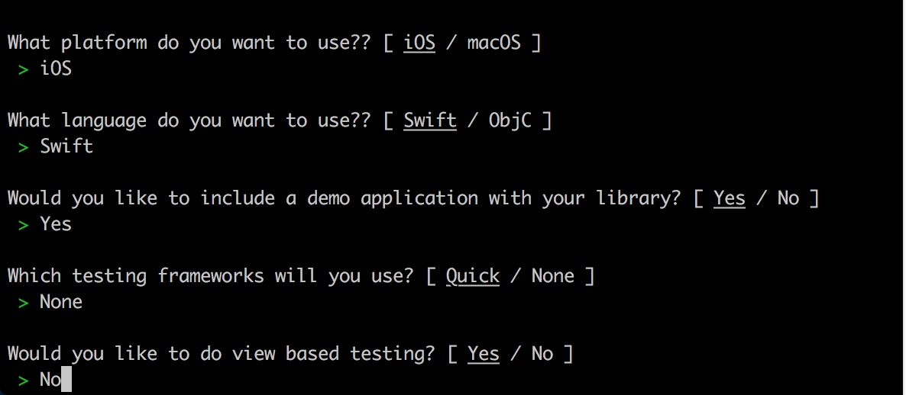
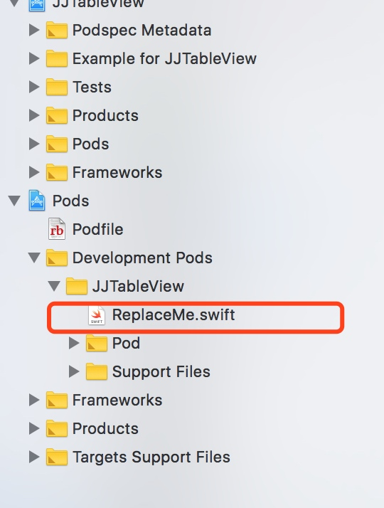

组件化 - 本地私有库创建
创建子工程（测试工程）
方法一： 确定需要抽取的组件，那么势必需要一个将其放到一个工程中能够正常运行，常规可以直接创建一个冲程，然后将需要的组件拖入工程中，创建
.spec文件：pod spec create [名称]方法二： 幸运的是 cocoapods 提供了我们快捷创建测试模板工程
1.首先在当前工程目录文件中创建Lib文件，与工程目录同级，执行：
pod lib create [名称]根据命令行提示操作，如下图

- 2. 创建成功将直接打开测试工程，找到 ReplaceMe.swift 文件，将已封装的组件替换该文件

- 3. 执行 pod install
pod install
拖入项目中的组件会自动出现在工程目录中，可进行对代码进行修改
主工程使用本地组件
- podfile 文件配置
打开主项目工程，Podfile中添加 JJTableView 本地组件（Lib文件与主工程目录同级）
pod 'JJTableView', :path => '../Lib/JJTableView'
- 执行 pod install
pod install
主工程Pods工程中就会出现本地组件化的代码